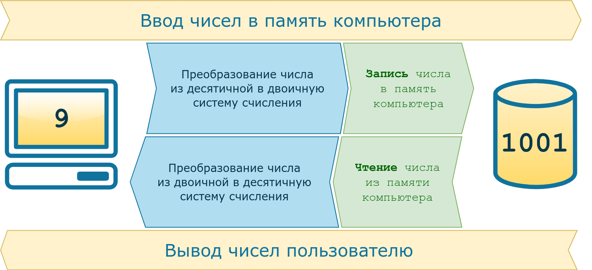
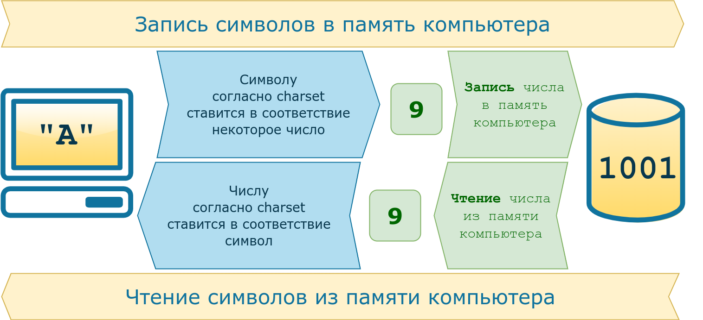
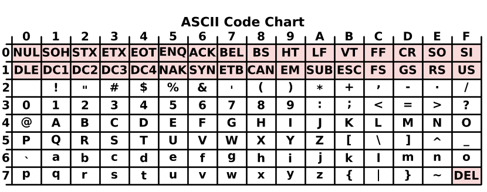
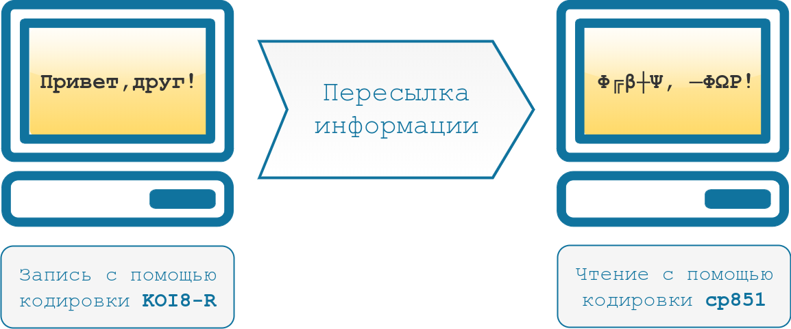

| Кодировки. | ||||||||
| Назад | ||||||||
Почему кодировки - это важно?Компьютеры постоянно работают с текстами: это ленты новостных сайтов, фондовые биржи, сообщения в социальных сетях и мессенджерах, банковские приложения и многое другое. Сегодня мы не можем представить жизнь без передачи информации. Но так было не всегда. Компьютеры научились работать с текстом благодаря появлению кодировок. Кодировки прошли большой путь от таблиц символов, созданных отдельно для каждого компьютера, до единой кодировки, принятой во всём мире. Сейчас Unicode — это основной стандарт кодирования символов, включающий в себя знаки почти всех письменных языков мира. Unicode применяется везде, где есть текст. Информация на страницах в социальных сетях, записи в базах данных, компьютерные программы и мобильные приложения — всё это работает с использованием Unicode. Предпосылки появления кодировокИсторически компьютер создавался как машина для ускорения и автоматизации вычислений. Само слово computer с английского можно перевести как вычислитель, а в 20 веке в СССР, до распространения термина компьютер, использовалась аббревиатура ЭВМ — электронно вычислительная машина. Всё, чем компьютеры оперировали — числа. Основным заказчиком и драйвером появления первых моделей были оборонные предприятия. На компьютерах проводили расчёты параметров полёта баллистических ракет, самолётов, спутников. В 1950-е годы вычислительные мощности компьютеров стали использовать для:
Компьютеры и числаЦели, для которых разрабатывались компьютеры, привели к появлению архитектуры, предназначенной для работы с числами. Они хранятся в компьютере следующим образом:

В конце 1950-х годов происходит замена ламп накаливания на полупроводниковые элементы (транзисторы и диоды). Внедрение новой технологии позволило уменьшить размеры компьютеров, увеличить скорость работы и надёжность вычислений, а также повлияло на конечную стоимость. Если первые компьютеры были дорогостоящими штучными проектами, которые могли себе позволить только государства или крупные компании, то с применением полупроводников начали появляться серийные компьютеры, пусть даже и не персональные. Компьютеры и символыПостепенно компьютеры начинают применяться для решения не только вычислительных или математических задач. Возникает необходимость обработки текстовой информации, но с буквами и другими символами ситуация обстоит сложнее, чем с числами. Символы — это визуальный объект. Даже одна и та же буква «а» может быть представлена двумя различными символами «а» и «А» в зависимости от регистра. Также число «один» можно представить в виде различных символов. Это может быть арабская цифра 1 или римская цифра I. Значение числа не меняется, но символы используются разные. Компьютеры создавались для работы с числами, они не могут хранить символы. При вводе информации в компьютер символы преобразуются в числа и хранятся в памяти компьютера как обычные числа, а при выводе информации происходит обратное преобразование из чисел в символы. Правила преобразования символов и чисел хранились в виде таблицы символов (англ. charset). В соответствии с такой таблицей для каждого компьютера конструировали и своё уникальное устройство ввода/вывода информации (например, клавиатура и принтер).
 Распространение компьютеровВ начале 1960-х годов компьютеры были несовместимы друг с другом даже в рамках одной компании-производителя. Например, в компании IBM насчитывалось около 20 конструкторских бюро, и каждое разрабатывало свою собственную модель. Такие компьютеры не были универсальными, они создавались для решения конкретных задач. Для каждой решаемой задачи формировалась необходимая таблица символов, и проектировались устройства ввода/вывода информации. В этот период начинают формироваться сети, соединяющие в себе несколько компьютеров. Так, в 1958 году создали систему SAGE (Semi-Automatic Ground Environment), объединившую радарные станций США и Канады в первую крупномасштабную компьютерную сеть. При этом, чтобы результаты вычислений одних компьютеров можно было использовать на других компьютерах сети, они должны были обладать одинаковыми таблицами символов. В 1962 году компания IBM формирует два главных принципа для развития собственной линейки компьютеров:
Так в 1965 году появились компьютеры IBM System/360. Это была линейка из шести моделей, состоящих из совместимых модулей. Модели различались по производительности и стоимости, что позволило заказчикам гибко подходить к выбору компьютера. Модульность систем привела к появлению новой отрасли — производству совместимых с System/360 вычислительных модулей. У компаний не было необходимости производить компьютер целиком, они могли выходить на рынок с отдельными совместимыми модулями. Всё это привело к ещё большему распространению компьютеров. ASCII как первый стандарт кодирования информацииТелетайп и терминалПараллельно с этим развивались телетайпы. Телетайп — это система передачи текстовой информации на расстоянии. Два принтера и две клавиатуры (на самом деле электромеханические печатные машинки) попарно соединялись друг с другом проводами. Текст, набранный на клавиатуре у первого пользователя, печатается на принтере у второго пользователя и наоборот. Таким образом, например, была организована «горячая линия» между президентом США и руководством СССР вплоть до начала 1970-х годов. Телетайпы также преобразуют текстовую информацию в некоторые сигналы, которые передаются по проводам. При этом не всегда используется бинарный код, например, в азбуке Морзе используются 3 символа — точка, тире и пауза. Для телетайпов необходимы таблицы символов, соответствие в которых строится между символами и сигналами в проводах. При этом для каждого телетайпа (пары, соединённых телетайпов) таблицы символов могли быть свои, исходя из задач, которые они решали. Отличаться, например, мог язык, а значит и сам набор символов, который отправлялся с помощью устройства. Для оптимизации работы телетайпа самые популярные (часто встречающиеся) символы кодировались наиболее коротким набором сигналов, а значит и в рамках одного языка, набор символов мог быть разным. На основе телетайпов разработали терминалы доступа к компьютерам. Такой телетайп отправлял сообщения не второму пользователю, а информация вводилась на некоторый удалённый компьютер, который после обработки указанных команд, возвращал результат в виде ответного сообщения. Это нововведение позволило использовать тогда ещё очень дорогие вычислительные мощности компьютеров, не имея физического доступа к самому компьютеру. Например, компьютер мог размещаться в отдельном вычислительном центре корпорации или института, а сотрудники из других филиалов или городов получали доступ к вычислительным мощностями компьютера посредством установленных у них терминалов. ASCIIПовсеместное распространение компьютеров и средств обмена текстовой информацией потребовало разработки единого стандарта кодирования для передачи и хранения информации. Такой стандарт разработали в США в 1963 году. Таблицу из 128 символов назвали ASCII — American standard code for information interchange (Американский стандарт кодов для обмена информацией).
 Первые 32 символа в ASCII являются управляющими. Они использовались для того, чтобы, например, управлять печатающим устройством телетайпа и получать некоторые составные символы. Например:
Введение управляющих символов позволяло получать новые символы как комбинацию существующих, не вводя дополнительные таблицы символов. Однако введение стандарта ASCII решило вопрос только в англоговорящих странах. В странах с другой письменностью, например, с кириллической в СССР, проблема оставалась. Кодировки для других языковВ течение более чем 20 лет вопрос решали введением собственных локальных стандартов, например, в СССР на основе таблицы ASCII разработали собственные варианты кодировок КОИ 7 и КОИ 8, где 7 и 8 указывают на количество бит, необходимых для кодирования одного символа, а КОИ расшифровывается как Коды Обмена Информацией. С дальнейшим развитием систем начали использовать восьмибитные кодировки. Это позволило использовать наборы, содержащие по 256 символов. Достаточно распространён был подход, при котором первые 128 символов брали из стандарта ASCII, а оставшиеся 128 дополнялись собственными символами. Такое решение, в частности, было использовано в кодировке KOI 8. Однако единым стандартом указанные кодировки так и не стали. Например, в MS-DOS для русских локализаций использовалась кодировка cp866, а далее в среде MS Windows стали использоваться кодировки cp1251. Для греческого языка применялись кодировки cp851 и cp1253. В результате документы, подготовленные с использованием старой кодировки, становились нечитаемыми на новых. Свои кодировки необходимы и для других стран с уникальным набором символов. Это приводило к путанице и сложностям в обмене информацией. Ниже приведён пример текста, который написали в кодировке KOI8-R, а читают в cp851.
 Обе кодировки основаны на стандарте ASCII, поэтому знаки препинания и буквы английского алфавита в обеих кодировках выглядят одинаково. Кириллический текст при этом становится совершенно нечитаемым. При этом компьютерная память была дорогой, а связь между компьютерами медленной. Поэтому выгоднее было использовать кодировки, в которых размер в битах каждого символа был небольшим. Таблица символов состоит из 256 символов. Это значит, что нам достаточно 8 бит для кодирования любого из них (2^8 = 256). Переход к UnicodeРазвитие интернета, увеличение количества компьютеров и удешевление памяти привели к тому, что проблемы, которые доставляла путаница в кодировках, стали перевешивать некоторую экономию памяти. Особенно ярко это проявлялось в интернете, когда текст написанный на одном компьютере должен был корректно отображаться на многих других устройствах. Это доставляло огромные проблемы как программистам, которые должны были решать какую кодировку использовать, так и конечным пользователям, которые не могли получить доступ к интересующим их текстам. В результате в октябре 1991 года появилась первая версия одной общей таблицы символов, названной Unicode. Она включала в себя на тот момент 7161 различный символ из 24 письменностей мира. В Unicode постепенно добавлялись новые языки и символы. Например, в версию 1.0.1 в середине 1992 года добавили более 20 000 идеограмм китайского, японского и корейского языков. В актуальной на текущий момент версии содержится уже более 143 000 символов. Кодировки на основе UnicodeUnicode можно себе представить как огромную таблицу символов. В памяти компьютера записываются не сами символы, а номера из таблицы. Записывать их можно разными способами. Именно для этого на основе Unicode разработаны несколько кодировок, которые отличаются способом записи номера символа Unicode в виде набора байт. Они называются UTF — Unicode Transformation Format. Есть кодировки постоянной длины, например, UTF-32, в которой номер любого символа из таблицы Unicode занимает ровно 4 байта. Однако наибольшую популярность получила UTF-8 — кодировка с переменным числом байт. Она позволяет кодировать символы так, что наиболее распространённые символы занимают 1-2 байта, и только редко встречающиеся символы могут использовать по 4 байта. Например, все символы таблицы ASCII занимают ровно по одному байту, поэтому текст, написанный на английском языке с использованием кодировки UTF-8, будет занимать столько же места, как и текст, написанный с использованием таблицы символов ASCII. На сегодняшний день Unicode является основной кодировкой, которую используют в работе все, кто связан с компьютерами и текстами. Unicode позволяет использовать сотни тысяч различных символов и отображать их одинаково на всех устройствах от мобильных телефонов до компьютеров на космических станциях. Резюме
|
||||||||
| Конспект подготовлен Бакулиным А. М. 2022 год. | ||||||||